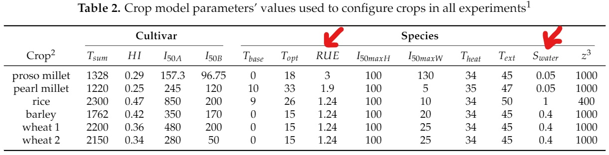
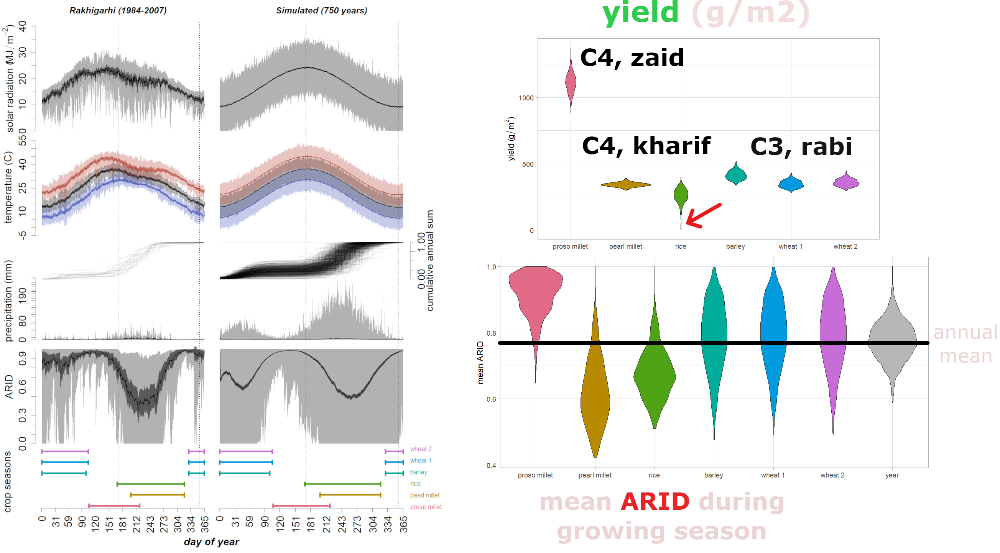
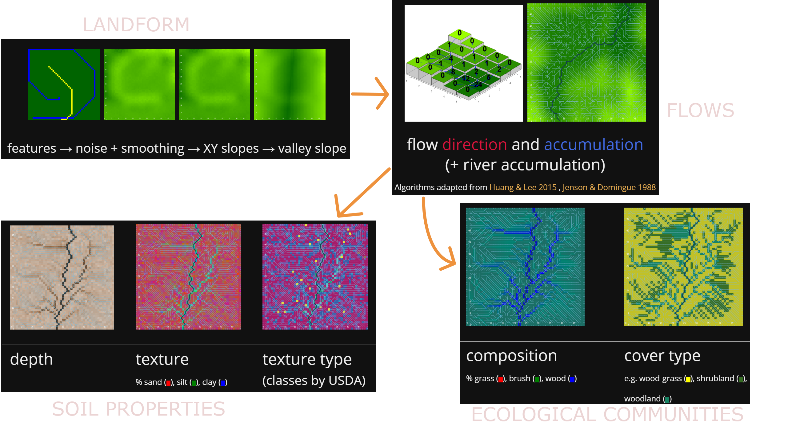
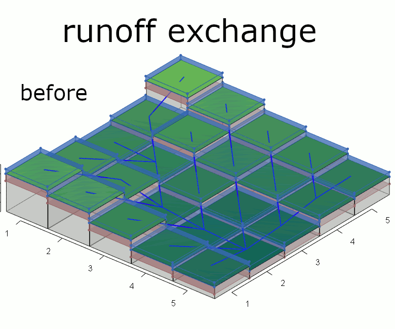
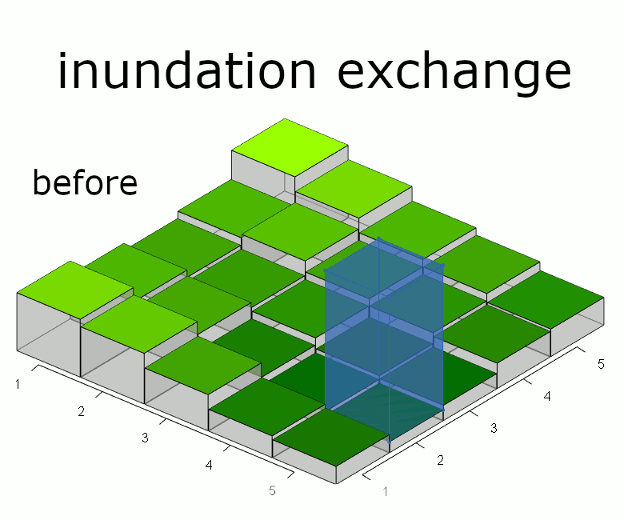

The Indus Village model
Modelling cropping strategies under weather variability and climate change in rural settlements of the Indus Civilisation
Andreas Angourakis,
Jennifer Bates,
Jean-Phillipe Baudouin,
Alena Giesche,
Joanna Walker,
M. Cemre Ustunkaya,
Nathan Wright,
Ravindra N. Singh and
Cameron A. Petrie
https://andros-spica.github.io/TwoRainsConference-Angourakis-et-al-2021/index.html?print-pdf (printable version)
1. Indus Village overview
Image source: Minecraft Wiki (© Mojang Studios), via GamepediaEnd-goals
Explore human adaptation to the variability
in landscapes of NW India during the Mature Harappan
Expose the sustainability of
food production regimes,
mainly in terms of cropping strategies,
in front of climate change


- Implementation in NetLogo, documentation in pseudocode diagrams and R markdown
- parameter exploration (sensitivity analysis)
- scenarios (parameters, programmed trends
and changes, alternative algorithms)
2. Weather model
Image source: blackreaper709 (© Mojang Studios), via redditWeather model
Angourakis et al. (in preparation, A)
3. Soil water model
Image source: Marsh Davies (© Mojang Studios)Soil Water model

Adapted from
the ARID Soil Water model
Wallach et al. 2014, Working with Dynamic Crop Models, pp. 24, 138
- R implementation published
- One-Layer bucket soil model
-
Output: ARID
(Agricultural Reference Index for Drought)
Woli et al. 2012, Agronomy Journal, 104(2):287-300
4. Crop model
Image source: Daniel Davies and Brett Galkowski (© Mojang Studios)Crop model
Adapted from
the SIMPLE crop model
Zhao et al. 2019, European J. of Agronomy, 104:97-106
- One model, many crops
- Crops defined by 13 parameters
- Integrates ARID
- Biomass growth: RUE modulated by temperature, CO2 and ARID
- A single growth phase (def. thermal time)
- Output: yield (g·m-2)
Crops - subset of Indus subset of Indus staple crops
rabi/zaid/kharif seasons | water stress sensitivity | C3/C4 species
Angourakis et al. (in preparation, C)
Crop model | Yield & Seasonality
Angourakis et al. (in preparation, C)
5. Land model
Image source: Marsh Davies (© Mojang Studios)Land model | Target output
J. Walker (PhD dissertation)
Land model | generation

Angourakis et al. (in preparation, B),
files available at the Indus Village model repository
6. Integrated Land Unit model
Image source: autisticCatnip in reddit (© Mojang Studios)
|  |
|  |
| Jenson & Domingue 1988, Yang et al. 2018 |
Angourakis et al. (in preparation, B)
files available at the Indus Village model repository
7. Integrated Land Crop model
Image source: Merreable in Planet Minecraft (© Mojang Studios)-
Crops as ecological components
water (aquatic) > crops > wood > brush > grass > bare soil -
Crop choice and management (without humans)
crop selection, cropping intensity, and crop frequency
Expected general relationship
between ARID and crop yield

flooding area
(high productivity)
vs
the rest
(certain crops less penalised by ARID)
Land Crop model | Results

Productivity distribution: role of flooding areas
sample of 5 terrains (2 with passing river)
Angourakis et al. (in preparation, C)
Land Crop model | Results

Experiment with randomised
crop frequencies
Local crop niche gradient:
correlation between
land unit total yield
and
frequency of each crop.
Thirsty vs drought-resistant crops
Angourakis et al. (in preparation, C)
Conclusions
- Long-haul modelling
- Balance simplification and complexity
- Model search and re-use
- Modularity and progressive design
- Share and fail gloriously Graham 2019
On modelling Socio-Ecological Systems:
Conclusions
- Seasonality matters
- Low and high-risk crops
- Multi-cropping and risk mitigation
- Next steps: consolidate and integrate models on
demography, nutrition, food economy and land use
On modelling Indus Civilisation agriculture:
'TwoRains' project
ERC, 2015-2021
Acknowledgements
Thanks to the Land, Water and Settlement and TwoRains teams:
Aftab Alam, Alessandro Ceccarelli, Sagorika Chakraborty,
Sudarshan Chakradhari, Arti Chowdhary, Yama Dixit, Charly French, Adam Green,
Henry Green, Lily Green, David Hodell, Penny Jones, Carla Lancelotti, Emma Lightfoot, Frank Lynam,
Sayantani Neogi, Hector Orengo, Arun Kumar Pandey, Danika Parikh, Vikas Pawar, Amit Ranjan,
David Redhouse, Dheerendra Pratab Singh, & Akshyeta Suryanarayan.
Special thanks also to the Department of AIHC and Archaeology, BHU, the European Research Council (ERC),
and the UK-India Education and Research Initiative (UKIERI) for support and funding, and to the Archaeological
Survey of India for permission to carry out the work.
THANK YOU FOR YOUR ATTENTION!
https://andros-spica.github.io/TwoRainsConference-Angourakis-et-al-2021/index.html?print-pdf (printable version)